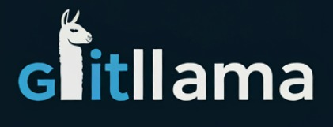

GitLlama

AI-powered github repo assistant built with Llama-3. Summarizes commits,
analyzes repository structure, and answers natural-language questions about code.
Uses Llama 3.2, Together AI, and Pinecone vector databse for RAG integration, to visualize history, surface issues,
and help technical/non-technical users grasp changes fast. (Meta-Hackathon Winner)
AI-based System Design Builder
An AI-assisted tool to rapidly prototype system architectures. Users pick components,
define connections, and convert spoken or typed requirements into visual designs—
accelerating brainstorming and documentation for complex systems.
Finance Insight Extractor — with OpenAI
A Streamlit web app that extracts key financial metrics from company earnings/news articles using the OpenAI API.
Automatically identifies company name, ticker, revenue, net income, and more—delivering fast, structured insights
for investors, analysts, and business teams.
Heart Risk Prediction & AI Medical Assistant
Machine learning model for predicting heart disease risk using patient parameters
(cancer history, kidney issues, prior conditions, and lifestyle factors).
Decision Tree and LightGBM are applied for accuracy and efficiency.
A Flask-powered web form collects user data and displays risk percentages.
The system also integrates an AI-based medical assistant for user guidance.